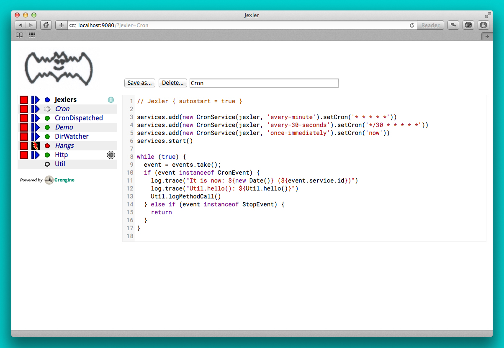
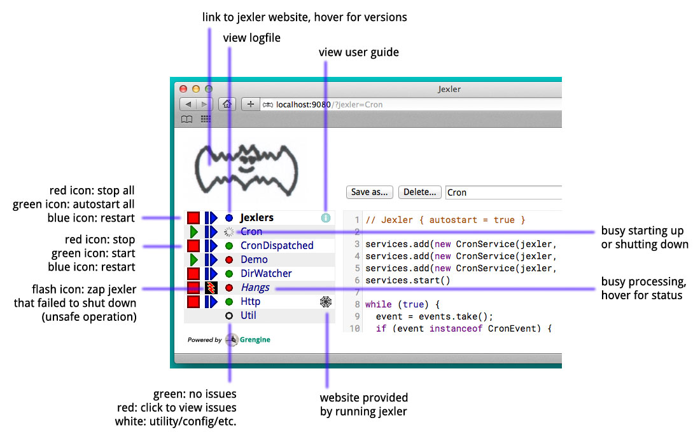
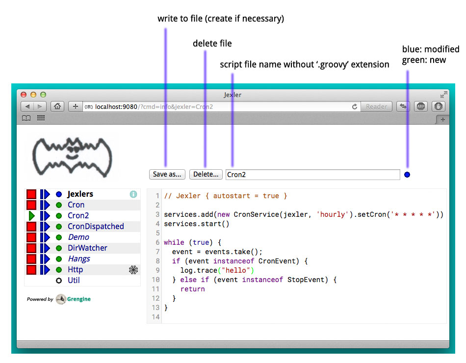
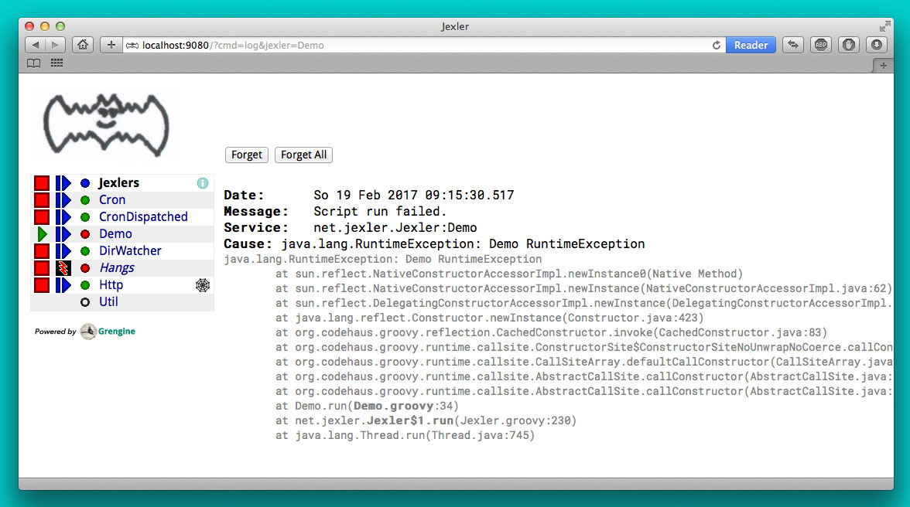
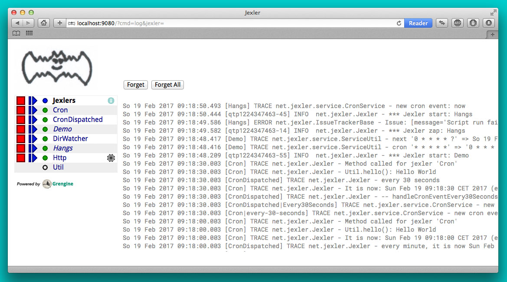

Jexler User Guide

Introduction
Here’s a first example of a jexler Groovy script:
// Jexler { autostart = true }
services.add(new CronService(jexler, 'every-minute').setCron('* * * * *'))
services.start()
while (true) {
event = events.take();
if (event instanceof CronEvent) {
log.info('hello')
} else if (event instanceof StopEvent) {
return
}
}The script registers a cron service that will send it a CronEvent every minute and in the event loop below the script waits for events until it receives a StopEvent.
Now instead of just logging the word "hello", let’s send an email instead:
// Jexler { autostart = true }
@Grab('org.apache.commons:commons-email:1.3')
import org.apache.commons.mail.*
services.add(new CronService(jexler, 'every-15-seconds').setCron('*/15 * * * * *'))
services.start()
while (true) {
event = events.take();
if (event instanceof CronEvent) {
new SimpleEmail().with {
setFrom 'jexler@artecat.ch'
addTo 'bugs@acme.org'
// ...
setSubject 'hello'
setMsg 'hello from jexler script'
send()
}
} else if (event instanceof StopEvent) {
return
}
}This uses Groovy Grape, which allows to download external libraries and use them immediately in the same script.
And since Groovy is syntactically a superset of Java, you can easily find code samples and libraries for almost anything you might want to do.
Here’s how the Web GUI looks like:

What you can see above is essentially a list of jexler Groovy scripts. In the webapp in the file system it looks like this:
jexler/
WEB-INF/
jexlers/
Cron.groovy
CronDispatched.groovy
Demo.groovy
DirWatcher.groovy
Hangs.groovy
Http.groovy
Util.groovy
some.properties
...
...
...
The first jexlers is busy stopping, the next three are running, the fourth failed to stop in time, and you could start or stop them in the GUI, or look at the log file, edit the scripts, etc.
If you want to try it out and play with jexler immediately:
-
Get the jexler source from GitHub: https://github.com/jexler/jexler
-
Install the Java 8 JDK (or later) and Gradle
-
gradle demo -
Open http://localhost:9080/ in a web browser
-
See the README at GitHub for alternatives…
Dispatching
It is also possible to define a jexler in a more structured way by defining methods that handle different life cycle stages and received events:
// Jexler { autostart = true }
// dispatch to methods below
JexlerDispatcher.dispatch(this)
// optional, called first
void declare() {
log.trace('-- declare()')
cron = '* * * * *'
}
// mandatory, called after declare(), before the event loop
void start() {
log.trace("-- start()")
services.add(new CronService(jexler, 'EveryMinute').setCron(cron))
services.add(new CronService(jexler, 'Every30Seconds').setCron('0/30 * * * * *'))
services.add(new CronService(jexler, 'OnceImmediately').setCron('now'))
services.start()
}
// optional*, called during event loop
// handle<event-class><service-id>(event), searched first
void handleCronEventEveryMinute(def event) {
log.trace('-- handleCronEventEveryMinute(event)')
log.trace("every minute, it is now ${new Date()} ($event.service.id)")
}
// optional*, called during event loop
// handle<event-class><service-id>(event), searched second
void handleCronEventEvery30Seconds(def event) {
log.trace('-- handleCronEventEvery30Seconds(event)')
log.trace('every 30 seconds')
}
// optional*, called during event loop
// handle(event), fallback, searched last
// * if no matching handler was found, an issue is tracked
void handle(def event) {
log.trace('-- handle(event)')
log.trace("got event $event.service.id")
}
// optional, called after receiving StopEvent in the event loop, just before the script returns
void stop() {
log.trace('-- stop()')
// nothing to do, services.stop() is called automatically after the script returns
}So that the first example above could e.g. be written as:
// Jexler { autostart = true }
JexlerDispatcher.dispatch(this)
void start() {
services.add(new CronService(jexler, 'every-minute').setCron('* * * * *'))
services.start()
}
void handleCronEvent(def event) {
log.info('hello')
}Under the hood, it is still just a running Groovy script (and if you do not
like the default behavior of JexlerDispatcher, get its Groovy source from the jexler
source at GitHub and copy it to a Groovy script called e.g. MyJexlerDispatcher.groovy
put it into the jexlers directory, adjust it as needed, and then call
MyJexlerDispatcher.dispatch(this) instead at the top of your jexler scripts).
Services
CronService
This service sends a CronEvent at times configurable with a cron string:
services.add(new CronService(jexler, "hourly").setCron("0 * * * *"))Note that the setCron() method returns its CronService instance, so that setters can be chained.
There are two special cron strings that may be useful for testing:
-
"now": Sends a single CronEvent immediately.
-
"now+stop": Sends a single CronEvent immediately, followed by a single StopEvent.
The CronEvent class has a single getter getCron() to get the cron string that caused the event:
log.trace(cronEvent.cron)(Note that cronEvent.cron is a Groovy shortcut for cronEvent.getCron().)
Implemented using the Open Source Quartz library.
By default, a Quartz Scheduler instance that is shared between all jexlers
is used (because each scheduler creates a new thread). Alternatively, the scheduler
can be explicitly set when constructing the CronService instance:
setScheduler(Scheduler scheduler).
Quartz Cron Strings
Quartz allows to trigger with a resolution of seconds (and optionally allows also to define years). This means that Quartz cron strings contain 6 (or 7) fields, instead of the usual 5.
Naively, you would configure a cron for every second as "* * * * * *", but for some strange reason (which escapes me), Quartz mandates that one of day-of month (position 4) or day-of-week (position 6) must be '?' (but not both).
Don’t worry, Jexler handles this for you, normal short cron strings like "* * * * *" are expanded to a valid quartz cron string like "0 * * * * ?" and also for long cron strings like "0 * * * * 1-5" a '?' is automatically replaced where needed, like to "0 * * ? * 1-5".
DirWatchService
This service observes a directory for changes in the file system and sends events when a file is created, modified or deleted:
services.add(new DirWatchService(jexler, 'watch-jexler-dir'))
services.start()
while (true) {
event = events.take();
if (event instanceof DirWatchEvent) {
log.trace("Got file change: ${event.kind} '${event.file.name}'")
} else if (event instanceof StopEvent) {
return
}
}There are the following setters:
-
setDir(File dir): The directory to watch, default if not set is the directory that contains the jexler. -
setKinds(List<WatchEvent.Kind> kinds): Kinds of events to watch for. Default if not set is standard events for create, modify and delete -
setModifiers(List<WatchEvent.Modifier> modifiers): Modifiers for watching, default if not set is empty. Useful particularly on Mac OS X, where there is no native support in the JVM and instead the file system is polled, apparently every 10 seconds by default. To reduce this to 2 seconds, pass a modifiercom.sun.nio.file.SensitivityWatchEventModifier.HIGH. -
setCron(String cron): When to poll the WatchService. Default if not set is every 5 seconds ("*/5 * * * * ?"). Note that it may take even longer than that for the underlying Java WatchService to register the change. -
setScheduler(Scheduler scheduler): Sets the Quartz scheduler, default if not set is a shared scheduler.
The DirWatchEvent class has the following getters:
-
File getFile(): Get file that has been created, modified or deleted. -
WatchEvent.Kind<?> getKind(): Get what happened with the file, can be StandardWatchEventKinds.ENTRY_CREATE, .ENTRY_MODIFY or .ENTRY_DELETE.
Implemented using a Java 7 WatchService (and Quartz).
More Services
Writing your own services is relatively easy, since you can also write services in Groovy, even from within the jexler web GUI.
The trick is that all Groovy scripts in the jexlers directory are part of the class path.
So, for example, if you wanted a more sophisticated version of CronService, you could copy the CronService.groovy from the jexler source to a MyCronService.groovy in the jexlers directory in the jexler webapp and do the same for CronEvent. After a few boilerplate changes you could start adding new features, etc.
And if you feel that it would be great if jexler had more services out-of-the-box, feel free to write your own library of services and make it available.
Side remark: If you wanted an additional service to be included with jexler itself, it would have to be something really, really, really central and generally useful and simple to manage and test, otherwise I wouldn’t touch it ;)
And even then…
Tools
ShellTool
This tool helps to run shell commands. (Note that there are already at least two standard ways of doing this with Groovy APIs, which may or may not be more convenient depending on your use case.)
shellTool = new ShellTool()
result = shellTool.run("echo 'hello world'")
log.trace(result.toString())There are the following setters:
-
setWorkingDirectory(File dir): Set working directory for the command; if not set or set to null, inherit from parent process. -
setEnvironment(Map<String,String> env): Set environment variables for the command (key is variable name, value is variable value); if not set or set to null, inherit from parent process. -
setStdoutLineHandler(Closure<?> handler): Set a closure that will be called to handle each line of stdout; if not set or set to null, do nothing. -
setStderrLineHandler(Closure<?> handler): Set a closure that will be called to handle each line of stderr; if not set or set to null, do nothing.
Note that the setters again return their ShellTool instance,i.e. setters can be chained:
result = new ShellTool().setWorkingDirectory('/tmp').setStderrLineHandler({log.info(it)}).run('ls')And there are two methods for running a shell command:
-
Result run(String command) -
Result run(List<String> cmdList)
The second method allows to explicitly indicate the application to run (first list element) and how to split its arguments.
Passing the right command string can be a bit tricky:
-
On windows some common shell commands like "dir" or "echo" are not actually commands, but arguments to cmd.exe, so use e.g.
cmd /c echo helloas a command string. -
To set the working directory for cygwin, use e.g.
c:/cygwin/bin/bash -l /my/working/dir ls -l. -
Sometimes there is no way around splitting up arguments explicitly, a single string won’t do.
The Result contains three items:
-
int rc: The return code of the command (0 is no error, other values indicate an error). -
String stdout: The output of the command. -
String stderr: The error output of the command.
If an exception occurs, the return code of the result is set to -1, stderr of the result is set to the stack trace of the exception and stdout of the result is set to an empty string.
Note that the toString() method of Result produces a single line string suitable
for logging. Line breaks in stdout and stderr are replaced by '%n'.
Implemented using Runtime.getRuntime().exec().
StringObfuscatorTool
This tool can help to obfuscate passwords and other sensitive strings. By default, it uses 128 bit AES with a hard-coded key, see below plus code/groovydoc for full details.
-
String obfuscate(String plain): UTF-8 encode, pad with random bytes, encipher and hex encode given string. -
public String deobfuscate(String encHex): Hex decode, decipher, unpad and UTF-8 decode given string. -
StringObfuscatorTool(): Default constructor. Chooses 128 bit AES (AES/CBC/PKCS5Padding) with a hard-coded default key and iv, and sets byteBufferPadLen to 64, which limits plain strings to max 47 characters (resp. less if some plain string characters need more than one byte UTF-8 encoded). -
StringObfuscatorTool setParameters(String hexKey, String hexIv, String algorithm, String transformation): Set key, iv, algorithm and transformation. -
StringObfuscatorTool setByteBufferPadLen(int len): Set the length to which to pad the plain string as UTF-8 encoded byte buffer.
Simple use case:
-
Log obfuscated password:
log.trace(new StringObfuscatorTool().obfuscate("mysecret")) -
Copy obfuscated password from log file (and delete entry from log file).
-
Use it:
def password = new StringObfuscatorTool().deobfuscate("2A8A0F … 5DA963")
Note that this is overall not a cryptographically strong protection of secrets, just a countermeasure to fend off the simplest attacks, like e.g. "shoulder surfing". Someone with access to the running jexler with write permission for jexler scripts can easily deobfuscate secrets. Someone with only read access to jexler scripts can also simply copy the obfuscated string and deobfuscate it on a different jexler instance. To fend off that attack, e.g. store obfuscated passwords in files in the jexlers directory:
new File("password.txt").setText(new StringObfuscatorTool().obfuscate("mysecret"))
def password = new StringObfuscatorTool().deobfuscate(new File("password.txt").text)To obfuscate things even a little more, you could set custom cipher parameters that you would read from a file, or maybe even consider something like the following. Subclass the StringObfuscatorTool class in Groovy (or Java):
class MyObfuscatorTool extends ch.artecat.jexler.tool.StringObfuscatorTool {
public MyObfuscatorTool() {
setParameters("00--my-AES-128-secret-key-hex-00", "00--my-AES-128-secret-iv-hex--00",
"AES", "AES/CBC/PKCS5Padding")
}
}Compile the class and place the resulting class file in the jexlers directory or within the WEB-INF/lib directory, i.e. add it to the classpath of the running jexlers. This would make it a little harder to deobfuscate strings even to someone with read access to the files in the jexlers resp. WEB-INF/lib directory, because the keys are somewhat "hidden" in the class file.
More Tools
With Java and Groovy plus Grape you have thousands of tools and libraries at your fingertips, just search the internet when you need something specific.
Note again that since almost all Java code is valid Groovy code, you can search for solutions in Java and Groovy to find something you can use in jexler scripts.
Besides, essentially the same comments as for services apply also to tools. No need to reinvent the wheel.
Web GUI
Basic Usage

Use the red/green/blue icons in the first two columns of the table to start/stop/restart jexlers. The top row addresses all jexlers:
-
Red stop icon: Stop all running jexlers. This has the additional effect of replacing the Grengine instance with a new one, in order to get rid of accumulated dependencies pulled via Grape; this is especially useful when you replace a dependency with a newer version.
-
Green start icon: Start all jexlers that have autostart set to true (see further below).
-
Blue restart icon: Stop all running jexlers, then start all jexlers that have autostart set to true.
The rows below address individual jexlers:
-
Red stop icon: Stop jexler.
-
Green start icon: Start jexler.
-
Blue restart icon: Stop jexler, then start jexler.
Note that a jexler utility Groovy script that just declares a class with methods
simply runs and stops immediately again (since its main() method is implicitly empty),
so this causes no trouble at all when starting/stopping all jexlers.
The third column allows to view the jexler log file (blue round icon in top row) and to view any issues that a jexler may have had, where a green round icon means that there are no issues and a red round icon can be clicked to view the issue(s).
Issues are what jexler usually creates when something exceptionally happens that might require intervention by an administrator to get things running smoothly again.
Jexler uses logback for logging, by default
(see WEB-INF/classes/logback.xml) the jexler webapp logs to ${catalina.base}/logs/jexler.log
(with daily log rotation). If you change that location, the GUI should still automatically
find the log file, unless you do something more fancy, like splitting up logging into several files.
When a jexler is starting up or stopping, an animated progress icon is displayed in the third column, but it can still be clicked to view issues if there are any.
Click the name of any jexler in the fourth column to edit its script. Hover over the name to see the service state of the jexler.
There are five service states that apply to a jexler:
-
off: Not running.
-
busy (starting): Busy starting, not ready to process events, yet.
-
idle: Waiting for an event, i.e. hanging in
event.take(). -
busy (event): Busy processing an event, if so the script name is shown in italics in the GUI.
-
busy (stopping): Stopping, not processing events any more.
These states also apply to all jexlers as a group (and technically to all
classes that implement the Service interface, like the CronService).
The table with the service states is reloaded automatically every second by JavaScript. You typically only need to reload the current page explicitly if JavaScript is off or for very old Internet Explorer browsers for which this feature is not supported in the jexler web GUI.
Click the info icon for this user guide, click the jexler bat logo to visit its homepage and hover to see jexler and Groovy versions.
If a jexler becomes unresponsive, i.e. does not respond to stopping within the timeout,
the restart icon changes to a flash icon in the GUI. This allows to "zap" the jexler, which
means to stop the jexler thread with Thread#stop() and to stop all of its services.
Note that if the jexler script started more threads those won’t be stopped and stopping
a thread can also have other side effects, in fact it is generally considered unsafe.
If you need jexlers to react to stop events between polling events, it is better
to do this programmatically, using events.nextIsStop() (equivalent to
events.peek() instanceof StopEvent) to tell if the next event is a stop event
and events.hasStop() to tell if there are any stop events in the event queue.
Zapping should usually only be used as a last resort before restarting the
containing Java VM.
Edit jexler Scripts

New files are created simply by typing a new name and clicking save.
Note that save does by default not ask for permission before (over-)writing a script, whereas delete asks by default for permission. These settings can be changed in the WEB-INF/settings-custom.groovy file, see further below.
After saving a jexler script source, the web GUI tries to compile and load the new script. If this fails, an issue is reported for the jexler. An already running jexler keeps running (with its previous source) and starting a stopped jexler would fail until the issue in the source is fixed.
After saving a utility source, the web GUI tries to update the container of all utility sources, i.e. compile to it (actually, this is largely handled by Grengine automatically). If this fails. an issue is reported for the container. Note that running jexlers are not affected by this. You can even stop and restart them and they will see the last known good state of the container (which is again a Grengine feature).
Issues

Issues are automatically created if a jexler unexpectedly exits by throwing an exception.
Often it is better to catch exceptions within the jexler script to keep the jexler running, and instead to track the exception as a issue in the script:
try {
new SimpleEmail().with {
addTo to
//...
send()
}
log.trace("mail successfully sent to $to")
} catch (EmailException e) {
jexler.trackIssue(jexler, "Could not send mail to $to.", e)
return false
}Parameters are:
-
Service service: The service where the issue occurred, may be null. -
String message: A message that provides information about the issue. -
Exception exception: The exception (if any) that caused the issue, may be null.
Tracked issues are always additionally logged with level error (as a single line, with full stack trace, if available, and with linebreaks translated to '%n').
View Log

Note that newest log entries are on top.
Customizing and Safety/Security
Default settings are in WEB-INF/settings.groovy and can be overridden with custom settings in WEB-INF/settings-custom.groovy.
Both files are Groovy config files, read with the Groovy ConfigSlurper.
Settings can be indicated separated with dots like in Java properties
or in a tree structure.
Timeouts
operation {
jexler {
// Timeout in seconds for starting a jexler before reporting an issue.
startTimeoutSecs = 10
// Timeout in seconds for stopping a jexler before reporting an issue.
stopTimeoutSecs = 10
}
}These two parameters control how long the jexler waits before returning to the client when starting / stopping a jexler or all jexlers. An issue is tracked if the timeout occurs. Default is 10 secs each.
Sample overrides:
operation.jexler.startTimeoutSecs = 30
operation {
jexler.stopTimeoutSecs = 20
}Security
security {
script {
// Whether to allow editing jexler scripts in web GUI or not.
allowEdit = true
}
}This parameter can be used to disallow editing of jexler scripts in the GUI as a security measure. Default is to allow editing.
Please be aware that jexler (thanks to Groovy and Grape) is a very powerful tool:
Giving someone access to a jexler web GUI with write permission for scripts is practically like giving someone shell access as the user under which the web GUI is running.
Please protect the web GUI accordingly.
Without write permission, jexler is relatively harmless, also since it is not possible to give a jexler any kind of start parameters in the web GUI without editing the script.
Safety
safety {
script {
// Whether to confirm script save in web GUI or not.
confirmSave = false
// Whether to confirm script delete in web GUI or not.
confirmDelete = true
}
}These two parameters indicate whether the web GUI should ask the user to confirm before saving or deleting a jexler script file. Default is false for saving and true for deleting.
Handling HTTP Requests
Basic: Use Case "Web GUI"
HTTP requests sent to the jexler webapp with request parameters
cmd=http&jexler=<jexler-id> are passed to a method handleHttp(PageContext p)
of the corresponding jexler, if found and the jexler is operational.
The method parameter is a javax.servlet.jsp.PageContext, i.e. you can use
things like p.request, p.request.getParameter('action'), p.out, p.session,
p.servletContext, etc. in the handler.
Simple example:
void handleHttp(def p) {
p.response.status = 200
p.out.println("""\
<html>
<head>
<title>Jexler Http</title>
</head>
<body>
<h1>Jexler Http</h1>
<a href="."><img src="jexler.jpg"></a>
<p>Status: $p.response.status</p>
</pre>
</body>
</html>
""")
}If an exception occurs in the handler, a simple 500 error page is returned. Similarly, if there is no corresponding operational jexler or it contains no handler with the above signature, a 404 error page is returned.
In the GUI, a web icon is shown on the right when the jexler is available for HTTP requests and clicking the icon takes you there.
Note that incoming HTTP requests are processed in parallel to the normal jexler event queue, possibly in several threads created by the web container. Make sure operations are thread-safe in these two respects.
Advanced: Use Case "REST Calls"
By default the JexlerRestDispatcherServlet is configured for the location
/rest/ and also by default requests with an HTTP header jexler are
redirected to a service(httpReq, httpResp) method in the jexler indicated
by the header value. How to get the jexler ID from the request is freely
configurable in the settings, as well as how to react to errors outside of
the handling jexler. One idea behind configuring a separate location is to
separate authentication between a user of the web GUI who can freely edit
and run Groovy scripts and a web service with limited functionality.
Of course, the generic servlet may also be used to serve a web GUI, with a configurable error page and at a location independent of the running jexler webapp.
Source Code
The source code is at GitLab: https://github.com/jexler/jexler
See there for instructions how to build.
The code is a Gradle project that contains two Java sub-projects:
-
jexler-core: The core jexler library (JAR) which contains also all services and tools.
-
jexler: The jexler web GUI, a simple webapp (WAR) with a single JSP.
jexler-core is deeply tested, close to 100% test coverage in jacoco, except for a few artifacts and except that jacoco underrates Groovy coverage for purely technical reasons. Unit tests are written with Spock, the fascinating Groovy test framework.
The jexler webapp is very simple and contains a demo unit test that starts it in a Jetty embedded web server.
The following packages are automatically imported:
-
ch.artecat.jexler -
ch.artecat.jexler.service -
ch.artecat.jexler.tool
and the following variables are available to jexler Groovy scripts (binding):
-
Jexler jexler: The jexler instance. -
JexlerContainer container: The jexler container instance, i.e. the class that abstracts all jexlers in a directory. -
List<Event> events: The list of events to poll for new events. -
ServiceGroup services: The group of services to add services to and to start then. It is not mandatory to add any services here, they can also be managed separately, but often it is convenient that services added to this service group are automatically stopped if the jexler exits (regularly or due to an exception). -
Logger log: The logback logger for the jexler instance.
To get these variables from other classes, pass this of the running
jexler in a constructor or similar to those classes.
You can also use JexlerContainer.getLogger() to get the logger of the
JexlerContainer class.
Meta Config
The first line of a jexler script must start with // Jexler {
(with arbitrary whitespace before and in between, case insensitive)
and may contain a Groovy config (which the Groovy `ConfigSlurper can
parse) with string keys and values of any type, the so called
meta config, for example
// Jexler { autostart = true; whatever = 'my words' }or
// jexler {}The meta config is evaluated before running the jexler script, i.e. none of the variables listed above are available for that map. There is one boolean settings that jexler uses by default:
-
autostart: If true, the jexler is started when the webapp starts up. Default is false.
Adding more items typically makes no sense as long as the source of the jexler webapp or core itself is not modified, and could be useful if you use the jexler core library in a different context.
Distribution
-
The jexler-core JAR is at Maven Central
-
The jexler webapp is at Sourceforge (see "Files" tab)
-
The website grengine.ch/jexler hosts Groovydoc, JaCoCo and this guide
Use Cases
Automatic Builds (jexler itself and httest Binaries)
In 2013, I have used jexler to make nightly builds of jexler on four different platforms: Mac, Windows and Debian Linux 32 bit and 64 bit. This included roughly checking out the source from git, running the build and sending a mail with the result if not OK. On each of the four platforms, there was an independent Tomcat with its jexler webapp (and jexlers shared via a "private" git repository at sourceforge).
On the same four platforms, I also made nightly and release builds of httest, an Open Source HTTP test tool written in C by Christian Liesch (and with some minor contributions by me and others):
-
"httest is a script based tool for testing and benchmarking web applications, web servers, proxy servers and web browsers. httest can emulate clients and servers in the same test script, very useful for testing proxys."
-
Project: https://htt.sourceforge.net/
-
Sourceforge: https://sourceforge.net/projects/htt/
Release builds were triggered automatically by polling sourceforge for a new httest source release. After checking out the source and building the binaries, the binaries were uploaded via FTP to the jexler website and notification mails sent, as needed. The builds (nightly and release) included also to run all tests automatically and provide a test report. The Windows build resulted also in a Visual Studio Solution, complete with all needed external libraries and includes. For building on Windows, a combination of cygwin and Visual Studio was used, so that most parts of the build could be shared as bash scripts across all four platforms, but that’s already a different story…
Checks and Cleanups
At work I continue to use it since 2013 for various minor maintenance things, e.g. for checking if certain nightly builds have really run or for warning when disk space is getting low resp. cleaning up right away in that case, and for a few more things, including a few simple web GUIs.
More
I am curious whether and for what purposes jexler might be used, but would also not be angry if practically nobody uses it, it was fun to write jexler and I personally like it, both from a technical and an artistic perspective - that’s reward enough for me :)
Jexler is maybe more suited for tasks that have some leisure in them, but in principle you could also imagine to write a web server with jexlers as handlers or similar things.
Keep me updated at jexler@artecat.ch.
Roadmap
Well, there is none, except to keep jexler really small and to keep the quality high. :)
Then again, in spring 2015 I migrated Jexler from Java 7/JUnit to Groovy/Spock (and scheduling from Cron4j to Quartz, which now allows scheduling per second) for Jexler 2, and in winter 2017 I made a lot of GUI improvements and more for Jexler 2.1.x, so you might never know…
I will gladly link third party libraries and similar additions around jexler on my website and, if you want to take it all to a new level, feel free to do so within jexler’s Apache 2 Open Source license.
Or to put it a bit more poetically, to me jexler is an island, things may flow freely around it, but jexler itself is unlikely to change much.
Copyright © 2012-now Jex Jexler (Alain Stalder)
https://grengine.ch/jexler/
Note also that the jexler logo with the bat is my own creation (*2010).
License
Licensed under the Apache License, Version 2.0 (the "License");
you may not use this file except in compliance with the License.
You may obtain a copy of the License at
Unless required by applicable law or agreed to in writing, software
distributed under the License is distributed on an "AS IS" BASIS,
WITHOUT WARRANTIES OR CONDITIONS OF ANY KIND, either express or implied.
See the License for the specific language governing permissions and
limitations under the License.